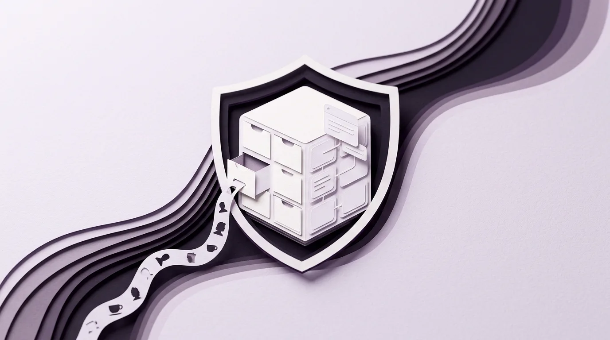

Secara sederhana, database (basis data) adalah lemari arsip elektronik di dalam komputer server yang bertugas menyimpan, merapikan, dan mengambil kembali jutaan informasi secara cepat agar sebuah aplikasi atau website bisa mengenali penggunanya. Konsep penyimpanan data berbentuk tabel yang kita gunakan di hampir seluruh aplikasi hari ini pertama kali ditemukan oleh ilmuwan komputer Edgar F. Codd di laboratorium IBM pada tahun 1970 melalui model Relational Database, dan ketika kita mendengar berita jutaan data pelanggan bocor di internet, itu artinya ada pihak tak diundang yang berhasil menyalin isi tabel di dalam lemari arsip tersebut lewat celah sistem yang lupa dikunci.
Beberapa hari terakhir di penghujung Oktober hingga awal November 2026 ini, linimasa media sosial di Indonesia kembali ramai membicarakan kabar bocornya sekitar 5,7 juta data akun pelanggan dari sebuah aplikasi pemesanan kopi lokal populer. Banyak pengguna setia aplikasi tersebut yang langsung bertanya-tanya dengan cemas: "Sebenarnya data kita itu disimpan di sebelah mana sih saat kita mendaftar di aplikasi ponsel? Kenapa jutaan catatan pesanan kopi dan nomor telepon bisa diambil orang sekaligus, dan apakah saldo bank kita ikut terancam?"
Pertanyaan itu sangat wajar karena bagi kebanyakan orang, apa yang terjadi sesudah kita menekan tombol "Daftar" atau "Pesan Sekarang" di layar ponsel terasa seperti kotak hitam yang misterius. Agar kita tidak mudah panik sekaligus paham cara kerja teknologi yang kita pakai setiap hari, mari kita bedah dengan bahasa manusia paling sederhana: apa sebenarnya database itu, bagaimana kisah sejarah penciptaannya dari proyek roket pendaratan di Bulan hingga makalah legendaris tahun 1970, serta pelajaran berharga apa yang bisa dipetik dari insiden 5,7 juta data aplikasi kopi tersebut.
Apa Sebenarnya Database Itu dan Ke Mana Perginya Data Kita Saat Menekan Tombol Daftar
Bayangkan kamu baru saja mengunduh aplikasi kedai kopi favoritmu di ponsel. Saat pertama kali membukanya, aplikasi itu memintamu mengetik nama lengkap, alamat email, nomor telepon, tanggal lahir (supaya kamu bisa diberi hadiah minuman gratis saat ulang tahun), dan alamat rumah untuk pengantaran. Begitu kamu menekan tombol simpan, ke mana perginya tulisan yang baru saja kamu ketik itu?
Banyak pemula mengira data profil dan jumlah poin diskon kita disimpan di dalam memori ponsel kita sendiri-sendiri. Padahal, kalau datanya hanya disimpan di dalam ponselmu, maka saat ponselmu hilang atau kamu berganti HP baru, seluruh poin kopi dan riwayat pesananmu akan ikut lenyap selamanya! Supaya akunmu tetap bisa dibuka dari HP mana saja dan kasir di kedai kopi bisa melihat pesananmu secara langsung, seluruh data itu dikirim lewat internet menuju satu komputer induk milik perusahaan yang disebut Server, lalu disusun rapi di dalam sebuah sistem bernama Database.
Analogi Buku Absen dan Lemari Berlaci untuk Memahami Tabel, Baris, serta Kolom
Jangan membayangkan database sebagai kumpulan rumus rumit yang melayang-layang di udara seperti di film fiksi ilmiah. Jika kamu pernah melihat buku absen sekolah atau lembar tabel di aplikasi Microsoft Excel / Google Sheets, maka kamu sebenarnya sudah memahami delapan puluh persen bentuk asli sebuah database!
Di dalam database modern (yang secara teknis disebut sebagai Relational Database atau basis data relasional), informasi disimpan di dalam laci-laci terpisah yang disebut Tabel (Table). Agar pencatatannya tetap rapi dan mudah dicari, sebuah aplikasi kopi membagi datanya ke dalam beberapa tabel khusus sesuai fungsinya:
- Tabel Pelanggan (Users): Laci pertama ini khusus mencatat daftar orang yang punya akun.
Setiap kotak ke samping disebut Kolom (Column) yang berisi kategori informasi
seperti
ID_Pelanggan,Nama,Nomor_HP,Tanggal_Lahir, danAlamat. Sementara itu, setiap deret ke bawah disebut Baris (Row) yang masing-masing mewakili satu orang pelanggan. Jadi, jika sebuah aplikasi memiliki 5,7 juta pelanggan, artinya Tabel Pelanggan tersebut memiliki 5,7 juta baris ke bawah. - Tabel Menu Kopi (Products): Laci kedua khusus mencatat daftar minuman yang dijual, mulai dari kode menu, nama kopi, hingga harganya.
- Tabel Pesanan (Orders): Laci ketiga khusus mencatat transaksi harian, yaitu siapa memesan apa, jam berapa, dan di cabang mana.
Lalu bagaimana caranya agar Tabel Pesanan tahu siapa yang membeli segelas Es Kopi Susu tanpa harus menulis
ulang nama lengkap, nomor HP, dan alamat panjang lebar di setiap struk pembelian? Jawabannya adalah
menggunakan Nomor Induk Unik yang di dunia komputer disebut Primary Key.
Sama seperti mahasiswa yang cukup menulis Nomor Induk Mahasiswa (NIM) di lembar ujian, sistem database
cukup menghubungkan ID_Pelanggan: 1045 di Tabel Pelanggan dengan ID_Pelanggan: 1045
di Tabel Pesanan. Karena tabel-tabel ini saling berhubungan satu sama lain melalui nomor induk tersebut, maka
sistem ini dinamakan Relational Database (database yang saling berelasi).
Mengapa Aplikasi Membutuhkan Bahasa Khusus Bernama SQL untuk Mengambil Data
Meskipun bentuknya mirip lembar Excel, manusia biasa tidak mungkin sanggup menggulir layar berisi 5,7 juta baris dengan mata telanjang untuk mencari satu nomor telepon pelanggan. Apalagi di jam sibuk makan siang, ada ribuan orang di seluruh Indonesia yang menekan tombol pesan kopi pada detik yang bersamaan.
Di sinilah aplikasi membutuhkan seorang "pustakawan super cepat" yang berjaga di depan lemari laci database. Saat kamu membuka aplikasi kopi di ponselmu, layar aplikasi (bagian depan yang pernah kita bahas di artikel perbedaan tampilan UI dan pengalaman UX) akan mengirim surat perintah singkat ke pustakawan database di belakang layar.
Surat perintah itu ditulis menggunakan bahasa khusus bernama SQL (singkatan dari Structured Query Language, sering dibaca "sikuel" atau "es-kyu-el"). SQL dirancang menyerupai kalimat perintah bahasa Inggris sehari-hari yang terstruktur rapi. Misalnya, ketika kamu membuka halaman profilmu, komputer cukup mengirimkan satu baris perintah SQL seperti ini kepada database:
Contoh Perintah SQL dalam Bahasa Manusia:
SELECT nama, poin_kopi FROM tabel_pelanggan WHERE nomor_hp = '08123456789';
Artinya persis seperti kalimat sehari-hari: "Tolong ambilkan data nama dan
poin_kopi dari laci tabel_pelanggan khusus untuk orang yang
nomor_hp miliknya adalah 08123456789." Dalam waktu kurang dari seperseratus detik,
pustakawan database langsung menyerahkan satu baris data itu ke layar ponselmu!
Sejarah Awal Database Dibuat dari Roket Apollo hingga Penemuan Edgar F. Codd Tahun 1970
Melihat betapa mudahnya aplikasi zaman sekarang mencari satu nama di antara jutaan baris data, kita mungkin mengira komputer memang sudah pintar melakukan hal itu sejak pertama kali diciptakan. Padahal, pada era 1950-an hingga akhir 1960-an, menyimpan dan mencari data di dalam komputer adalah pekerjaan yang luar biasa menyiksa bagi para ilmuwan.
Zaman Ketika Komputer Masih Mencari Data secara Urut di Dalam Gulungan Pita Kaset
Sebelum istilah database modern lahir, komputer pada dekade 1950-an menyimpan informasi di dalam tumpukan kartu kertas berlubang (punch cards) atau gulungan pita magnetik besar (magnetic tape) yang cara kerjanya persis seperti kaset pita lagu zaman dulu. Sistem penyimpanan kuno ini disebut sebagai Flat File (berkas datar yang berurutan).
Apa kelemahan terbesar menyimpan data di dalam gulungan pita kaset? Bayangkan kamu punya kaset berisi rekaman 10 lagu, dan kamu ingin mendengarkan lagu nomor 9. Kamu tidak bisa langsung melompat ke lagu nomor 9! Mesin pemutar harus memutar gulungan pita melewati lagu 1, 2, 3, 4, 5, 6, 7, dan 8 terlebih dahulu secara berurutan. Begitu pula nasib komputer zaman dulu: kalau seorang programmer ingin mencari data pelanggan bernama "Zulkifli" di urutan paling bawah, komputer harus membaca gulungan pita dari huruf A sampai Z selama berjam-jam!
Tantangan raksasa kemudian muncul pada pertengahan dekade 1960-an ketika badan antariksa Amerika Serikat (NASA) sedang mengebut proyek Program Apollo untuk mendaratkan manusia pertama di permukaan Bulan. Sebuah roket Saturn V dan pesawat ruang angkasa Apollo tersusun atas lebih dari dua juta suku cadang kecil (mulai dari baut, kabel, katup bahan bakar, hingga panel listrik) yang diproduksi oleh ribuan pabrik berbeda. NASA kebingungan: bagaimana cara melacak jutaan komponen roket itu di komputer agar jika ada satu baut yang cacat, teknisi bisa langsung tahu baut itu dipasang di bagian mana?
Untuk membantu NASA meluncurkan roket Apollo, perusahaan komputer IBM bersama Rockwell dan Caterpillar pada tahun 1966 hingga 1968 membangun salah satu sistem pengelola database komersial pertama di dunia bernama IMS (Information Management System). Sistem IMS ini menyusun jutaan suku cadang roket Apollo menggunakan struktur Pohon Silsilah keluarga (Hierarchical Database): dari batang utama bernama Roket Saturn V, bercabang ke Mesin Tahap Pertama, bercabang lagi ke Pompa Bahan Bakar, hingga ranting terkecil berupa Nomor Baut.
Revolusi Tabel Saling Terhubung dari Laboratorium IBM yang Kita Pakai sampai Hari Ini
Sistem pohon silsilah buatan IBM untuk roket Apollo itu memang berhasil mengantarkan Neil Armstrong mendarat di Bulan pada tahun 1969. Namun, ada satu kelemahan besar yang membuat para programmer di seluruh dunia pusing tujuh keliling: struktur pohon sangat kaku! Jika kamu ingin mencari tahu "Pabrik mana saja yang mengirim baut ukuran 5 milimeter ke semua bagian roket?", komputer harus memanjat naik-turun ribuan dahan pohon satu per satu, dan programmer harus menulis ulang kode pencariannya dari nol setiap kali susunan cabangnya berubah.
Kerepotan itulah yang memicu keresahan seorang ilmuwan matematika kelahiran Inggris yang bekerja di laboratorium riset IBM San Jose, California, bernama Edgar Frank "Ted" Codd. Sebagai mantan pilot Angkatan Udara Kerajaan Inggris pada Perang Dunia II sekaligus ahli matematika murni, Ted Codd berpikir: "Mengapa manusia harus tahu di cabang mana atau di laci nomor berapa komputer menyimpan data? Seharusnya manusia cukup menyebutkan data apa yang ia butuhkan, lalu biarkan komputer yang mencarikannya secara otomatis!"
Pada bulan Juni 1970, Edgar F. Codd menerbitkan makalah ilmiah sebelas halaman di jurnal Communications of the ACM berjudul "A Relational Model of Data for Large Shared Data Banks" yang kemudian menjadi fondasi matematis bagi seluruh sistem database modern. Di dalam makalah tahun 1970 itulah Codd mengusulkan pendekatan baru yang kini kita pakai setiap hari: tinggalkan struktur pohon yang kaku, dan simpanlah seluruh data ke dalam bentuk Tabel sederhana yang terdiri dari baris serta kolom yang saling terhubung!
Empat tahun setelah makalah Codd terbit, tepatnya pada tahun 1974, dua rekan penelitinya di proyek purwarupa IBM System R bernama Donald D. Chamberlin dan Raymond F. Boyce merancang bahasa perintah bernama SEQUEL (Structured English Query Language) untuk mengambil data dari tabel-tabel buatan Codd, yang kemudian disingkat menjadi SQL karena alasan merek dagang dan diadopsi sebagai standar resmi ANSI/ISO pada tahun 1986. Menariknya, manajemen IBM sempat lambat memasarkan penemuan Codd karena khawatir mengganggu penjualan sistem IMS lama mereka. Celah itu dimanfaatkan oleh Larry Ellison bersama rekan-rekannya yang membaca makalah Codd dan spesifikasi SQL buatan IBM, lalu merilis database komersial Oracle pada tahun 1979. Atas kontribusi fundamentalnya, Edgar F. Codd dianugerahi penghargaan tertinggi dunia ilmu komputer, ACM Turing Award, pada tahun 1981.
| Era & Sistem | Perumpamaan Cara Kerja | Kelebihan & Keterbatasan |
|---|---|---|
| 1950-an: Flat Files (Pita Magnetik) | Seperti gulungan kaset lagu atau satu lembar catatan panjang dari atas ke bawah. | Hanya cocok untuk arsip urut; sangat lambat jika harus mencari satu data di tengah jutaan catatan. |
| 1966: Hierarchical DBMS (IBM IMS Apollo) | Seperti diagram pohon silsilah keluarga yang bercabang dari induk ke anak-anaknya. | Cepat untuk melacak daftar suku cadang roket, tetapi sangat kaku jika pengguna ingin mencari data lintas cabang. |
| 1970: Relational Database & SQL (Edgar F. Codd) | Seperti kumpulan buku absen (tabel baris dan kolom) yang saling terhubung lewat Nomor Induk. | Standar Emas Dunia: Sangat rapi, mudah dicari dengan kalimat SQL (dipakai oleh PostgreSQL, MySQL, Oracle, SQL Server). |
| 2000-an hingga Kini: NoSQL & Cloud Database | Seperti map dokumen fleksibel yang tidak mewajibkan setiap halaman punya kolom yang sama persis. | Sangat gesit untuk menampung miliaran pesan chat, sensor lokasi, atau unggahan media sosial yang bentuknya beragam. |
Pelajaran dari Kasus 5,7 Juta Data Aplikasi Kopi dan Tiga Jalur Kenapa Database Bisa Bocor
Setelah memahami bahwa jutaan profil pelanggan disimpan sebagai baris-baris tabel di dalam komputer server, muncul pertanyaan besar berikutnya: jika pusat data perusahaan sudah dijaga berlapis-lapis, bagaimana caranya peretas dari luar bisa mengambil dan menyalin jutaan baris tabel tersebut?

Ketika Pintu Samping Dasbor Analitik dan Celah Suntikan Perintah Menjadi Jalan Masuk Peretas
Dalam praktik keamanan siber, sebuah database jarang sekali bobol karena peretas membongkar paksa mesin penyimpanan utamanya. Hampir seluruh insiden kebocoran data aplikasi terjadi lewat salah satu dari tiga jalur celah berikut:
- Jebolnya "Pintu Samping" Aplikasi Analitik Pihak Ketiga (Seperti Kasus Aplikasi Kopi):
Di sebuah perusahaan modern, tim pemasaran dan manajemen setiap hari perlu melihat grafik penjualan:
"Kopi rasa apa yang paling laku minggu ini di Jakarta Selatan?" Karena tim bisnis tidak bisa
mengetik kode
SQLlangsung ke dalam database, tim IT biasanya memasang sebuah program papan grafik (Business Intelligence / Analytics Dashboard, seperti Metabase) yang dihubungkan langsung dengan pipa khusus ke database utama. Dalam keterangan resmi manajemen kepada Bursa Efek Indonesia pada 2 November 2026 terkait insiden aplikasi kopi lokal tersebut, terungkap bahwa akses tanpa izin terjadi melalui celah keamanan pada platform analitik internal ini! Ibarat rumah yang pintu depannya sudah dipasangi teralis baja berlapis-lapis, tetapi jendela ruang dapur tempat asisten melihat stok barang ternyata memiliki engsel yang rusak dan bisa dibuka dari luar. - Suntikan Perintah Jahat lewat Kolom Ketikan (SQL Injection):
Ingatkah kamu bahwa aplikasi mengobrol dengan database menggunakan kalimat perintah SQL? Pada
website atau aplikasi yang dibuat secara
kurang teliti, kolom pencarian atau kolom formulir login tidak disaring dengan benar. Akibatnya,
alih-alih mengetik nama kopi di kotak pencarian, peretas justru mengetik potongan kalimat perintah
SQLlicik seperti' OR 1=1 --yang menipu pustakawan database agar memuntahkan seluruh isi laci tabel ke layar peretas! Teknik klasik bernama SQL Injection ini sudah berumur puluhan tahun namun masih terus memakan korban pada sistem yang jarang diaudit. - Kunci Akses Cloud yang Tertinggal atau Cadangan Data yang Lupa Dikunci: Banyak kebocoran data raksasa terjadi karena kesalahan manusiawi pengembang web (human error), misalnya tidak sengaja mengunggah berkas kode berisi kata sandi database ke repositori publik, atau menyimpan berkas cadangan harian (backup file) di gudang penyimpanan internet (cloud storage bucket) dengan pengaturan terbuka untuk umum tanpa kata sandi.
Sisi Positif yang Jarang Disadari Saat Aplikasi Tidak Meminta KTP dan Menggiling PIN Pengguna
Meskipun kabar bocornya 5,7 juta baris data yang memuat nama, alamat email, nomor telepon, tanggal lahir, jenis kelamin, alamat pengantaran, dan riwayat pesanan kopi itu tetap merupakan insiden serius yang merugikan privasi konsumen, ada tiga keputusan arsitektur keamanan yang patut diapresiasi dan wajib dicontoh oleh para pembuat aplikasi pemula dari kasus tersebut:
- Pertama, PIN Akun Disimpan dalam Bentuk Gilingan Acak (Hashed PIN): Di dalam tabel yang bocor tersebut, kode PIN 6 angka milik pengguna sudah digiling menggunakan fungsi kriptografi satu arah (hashed) sehingga tidak tersimpan sebagai angka telanjang (plain text). Sebagaimana telah kita bahas tuntas pada artikel mengenai sejarah password komputer dan cara kerja mesin penggiling hashing, peretas yang menyalin tabel tersebut tidak bisa langsung membaca angka PIN aslimu tanpa melakukan proses tebak paksa.
- Kedua, Data Kartu Kredit dan Pembayaran Dipisahkan di Brankas Berbeda: Aplikasi yang mengikuti standar industri menyerahkan pemrosesan nomor kartu kredit, kartu debit, dan saldo dompet digital langsung ke lembaga gerbang pembayaran resmi (Payment Gateway) berstandar keamanan perbankan, tanpa menyimpannya di database internal toko. Berkat pemisahan ini, ketika tabel pesanan kopi bocor, data rekening bank dan kartu kredit pengguna tetap aman.
- Ketiga, Penerapan Prinsip "Diet Data" (Data Minimization) dengan Tidak Meminta KTP: Pihak perusahaan menegaskan bahwa sejak awal berdiri, aplikasi mereka tidak pernah meminta atau menyimpan Nomor Induk Kependudukan (NIK KTP) pelanggan. Dalam rekayasa sistem dan Undang-Undang Pelindungan Data Pribadi (UU PDP), langkah ini dikenal sebagai Data Minimization: kumpulkan data seperlunya sesuai tujuan layanan, dan jangan pernah meminta data sensitif jika aplikasi memang tidak membutuhkannya. Risiko penyalahgunaan identitas pada insiden kemarin berhasil ditekan karena aplikasi pemesanan kopi tidak memungut foto KTP pelanggan saat pendaftaran.
Langkah Penyelamatan Saat Data Kita Ikut Bocor dan Prinsip Diet Data bagi Pembuat Website
Lalu apa yang harus kita lakukan sebagai pengguna biasa jika nama, nomor telepon, alamat rumah, dan riwayat pesanan kita terlanjur ikut bocor di internet? Dan apa yang harus dilakukan oleh mahasiswa IT atau pemilik usaha yang sedang membangun website sendiri?
Bagi kamu sebagai pengguna aplikasi harian, lakukan tiga langkah perlindungan cerdas ini sekarang juga:
- Waspadai Penipuan yang Menyebutkan Detail Pesanan Aslimu (Targeted Phishing): Risiko utama dari bocornya data nama, nomor HP, alamat rumah, dan riwayat pesanan kopi terletak pada meningkatnya akurasi serangan rekayasa sosial: penipu kini memegang detail transaksi nyata untuk membuat cerita bohong yang terdengar sangat meyakinkan. Jika minggu depan ada orang menelepon atau mengirim pesan WhatsApp sambil berkata, "Halo Kak Budi, kami dari tim undian resmi, melihat Kakak sering memesan Es Kopi Aren ke alamat Jalan Melati Nomor 12, Kakak berhak mendapat hadiah uang tunai, silakan klik tautan ini atau sebutkan kode OTP," jangan pernah percaya! Penipu sengaja membacakan riwayat pesanan dan alamat aslimu dari data yang bocor agar kamu mengira mereka petugas resmi.
- Jangan Pernah Memakai PIN Aplikasi Belanja yang Sama dengan PIN M-Banking: Walaupun PIN
di dalam database sudah digiling (hashed), kombinasi 6 angka (mulai dari
000000sampai999999) hanya memiliki tepat satu juta kemungkinan. Bagi komputer modern, menebak paksa (brute force) gilingan 6 angka yang tidak dibumbui pengaman kuat jauh lebih cepat dibandingkan menebak kata sandi huruf yang panjang. Oleh karena itu, bedakan PIN aplikasi kopi/belanja dengan PIN kartu ATM dan Mobile Banking milikmu, serta jangan pernah memakai tanggal lahirmu sebagai PIN (karena tanggal lahirmu ikut tertulis di kolom sebelahnya!). - Tolak Memberikan Data Berlebih Saat Mendaftar Aplikasi: Biasakan bersikap kritis. Jika ada aplikasi permainan, kupon diskon makanan, atau situs sederhana yang tiba-tiba meminta nomor KTP atau nama gadis ibu kandung, batalkan pendaftaranmu.
Sementara itu, bagi kamu mahasiswa IT, desainer produk, atau pemilik usaha yang mengelola website, jadikan peristiwa awal November 2026 ini sebagai pengingat berharga: pertama, terapkan Data Minimization secara ketat dan jangan menimbun data pribadi pelanggan yang tidak perlu, karena data yang tidak pernah kamu simpan adalah data yang tidak akan pernah bisa dicuri peretas; kedua, pastikan setiap perangkat lunak tambahan yang tersambung ke database (seperti dasbor analitik Metabase atau panel admin) selalu diperbarui ke versi terbaru sebagaimana prinsip yang kita pelajari di artikel pentingnya menutup celah keamanan server sejak dini, serta tidak pernah dibuka bebas ke jaringan internet publik tanpa pelindung jaringan internal (VPN) dan autentikasi berlapis.
Referensi
- Codd, E. F. (1970). A Relational Model of Data for Large Shared Data Banks. Communications of the ACM, 13(6), 377-387. https://doi.org/10.1145/362384.362685
- Chamberlin, D. D., & Boyce, R. F. (1974). SEQUEL: A Structured English Query Language. Proceedings of the 1974 ACM SIGFIDET Workshop on Data Description, Access and Control, 249-264. https://doi.org/10.1145/800296.811515
- IBM Corporation. (2024). Information Management System (IMS) and the Apollo Space Program History. IBM Archives. https://www.ibm.com/history/ims
- OWASP Foundation. (2025). SQL Injection Prevention & Database Security Cheat Sheet. Open Worldwide Application Security Project. https://cheatsheetseries.owasp.org/cheatsheets/SQL_Injection_Prevention_Cheat_Sheet.html
- PT Bursa Efek Indonesia (BEI). (2026, 2 November). Keterbukaan Informasi: Penjelasan atas Pemberitaan Media Massa terkait Dugaan Insiden Keamanan Siber PT Fore Kopi Indonesia Tbk (FORE). Jakarta: IDX Disclosure (idx.co.id).
- Undang-Undang Republik Indonesia Nomor 27 Tahun 2022 tentang Pelindungan Data Pribadi (UU PDP), Pasal 16 ayat (2) huruf c mengenai Prinsip Pembatasan Pengumpulan Data Pribadi secara Terbatas dan Spesifik (peraturan.bpk.go.id).